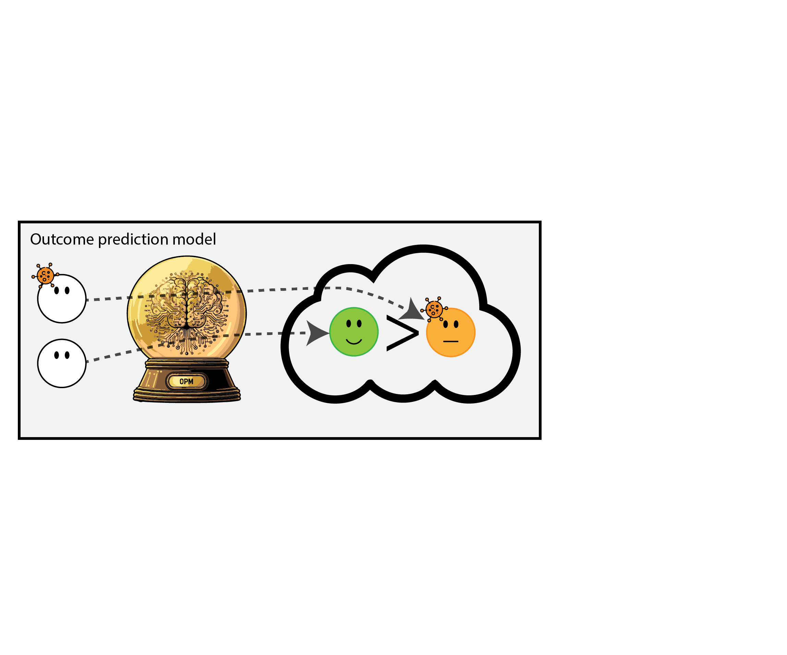

Aligning development, deployment and monitoring for AI: a causal perspective
MLHC pre-conference workshop 2025
Department of Data Science Methods, Julius Center, University Medical Center Utrecht
2025-08-14
Much of AI is predict - predict - predict
- using ECG, predict presence of structural heart disease, typically diagnosed with cardiac echo
- predict 10-year heart attack risk using basic medical information
The goal is impact on healthcare
ECG to SHD (Yao et al. 2021)
- prediction: structural heart disease
- intervention: refer patient for cardiac echo
- outcome: diagnosis of structural heart disease
- outcome (impact): reduce preventable early cardiac death
10 year heart attack risk (Hippisley-Cox et al. 2024)
- prediction: heart attack in 10 years
- intervention: prescribe cholesterol lowering medication
- outcome: heart attack
- outcome (impact): reduce heart attacks
Process
- data scientists optimize for predictive accuracy, which entails modeling statistical associations in the ‘healthcare system’
- the hope is: better prediction \(\implies\) better impact
- unfortunately, this is not automatically the case
predictive performance vs impact
predictive performance
- sensitivity, specificity
- AUC
- accuracy
- calibration

healthcare impact
- interventions (medical decisions)
- patient outcomes
When accurate prediction models yield harmful self-fulfilling prophecies (Van Amsterdam et al. 2025)




What happened here?
- had a ‘good’ model, got a bad policy
- model predicted outcome (survival) under historic treatment policy (always treat)
- did not predict what outcomes would be under alternative policy (no radiation)
- in this case, unmodeled treatment effect heterogeneity (aka treatment effect modification, interation, differing conditional average treatment effects)
Let’s monitor the AI model for performance over time

What happened in monitoring?
- took a measure of predictive performance (AUC)
- mistook it for a measure of (good) impact
- many potential examples (e.g. ICU stop treatment (Balcarcel et al. 2025), others (Center n.d.))
The devision of predictive performance and policy
Prediction model: walking stick

Health care provider: stick user
References
Balcarcel, Daniel R, Sanjiv D Mehta, Celeste G Dixon, Charlotte Z Woods-Hill, Ewan C Goligher, Wouter A C Van Amsterdam, and Nadir Yehya. 2025. “Feedback Loops in Intensive Care Unit Prognostic Models: An Under-Recognised Threat to Clinical Validity.” The Lancet Digital Health, July, 100880. https://doi.org/10.1016/j.landig.2025.100880.
Center, Science Media. n.d. “Expert Reaction to Study Suggesting Potential Patient Harms Associated with Use of AI Medical Outcome-Prediction Models | Science Media Centre.” Accessed August 12, 2025. https://www.sciencemediacentre.org/expert-reaction-to-study-suggesting-potential-patient-harms-associated-with-use-of-ai-medical-outcome-prediction-models/.
Hippisley-Cox, Julia, Carol A. C. Coupland, Mona Bafadhel, Richard E. K. Russell, Aziz Sheikh, Peter Brindle, and Keith M. Channon. 2024. “Development and Validation of a New Algorithm for Improved Cardiovascular Risk Prediction.” Nature Medicine, April. https://doi.org/10.1038/s41591-024-02905-y.
Van Amsterdam, Wouter A. C., Nan Van Geloven, Jesse H. Krijthe, Rajesh Ranganath, and Giovanni Cinà. 2025. “When Accurate Prediction Models Yield Harmful Self-Fulfilling Prophecies.” Patterns 6 (4): 101229. https://doi.org/10.1016/j.patter.2025.101229.
Yao, Xiaoxi, David R. Rushlow, Jonathan W. Inselman, Rozalina G. McCoy, Thomas D. Thacher, Emma M. Behnken, Matthew E. Bernard, et al. 2021. “Artificial Intelligence–Enabled Electrocardiograms for Identification of Patients with Low Ejection Fraction: A Pragmatic, Randomized Clinical Trial.” Nature Medicine 27 (5): 815–19. https://doi.org/10.1038/s41591-021-01335-4.
©Wouter van Amsterdam — WvanAmsterdam — wvanamsterdam.com/talks